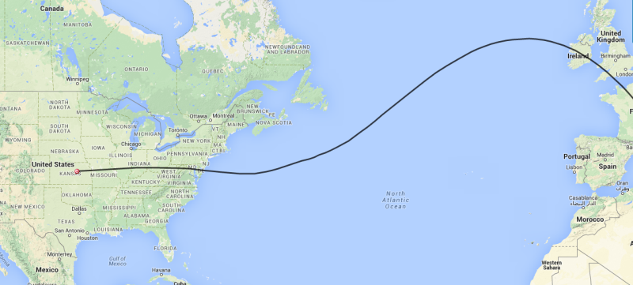

CNSP-22 continues to cross the country but the winds have changed enough that a new prediction was in order. It’s radio call is K6RPT-11 and it is intended to be another long duration flight. The link below will take you to the APRS screen to check on the balloon’s progress. http://aprs.fi/#!call=a%2FK6RPT-11&timerange=604800&tail=604800 I have done an updated flight prediction to give us all some idea where the balloon will travel.  Don |